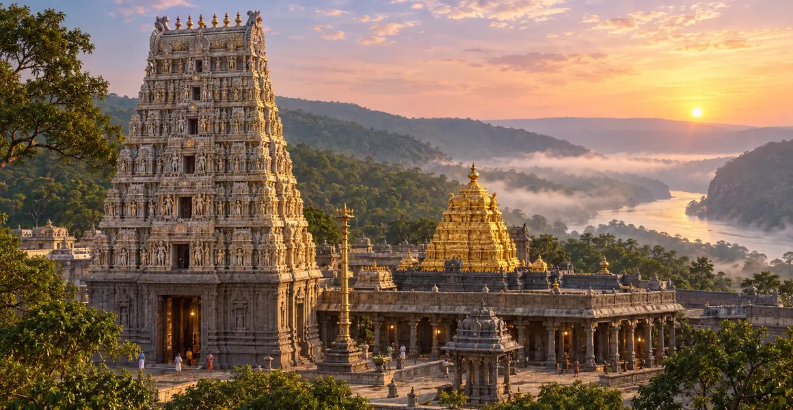

मल्लिकार्जुन ज्योतिर्लिंग
श्रीशैलम, नंद्याल जिला, आंध्र प्रदेश में स्थित मल्लिकार्जुन ज्योतिर्लिंग की पवित्र कथा, इतिहास, स्थापत्य, पूजा, उत्तरदायी यात्रा और आंतरिक शिक्षा की विस्तृत मार्गदर्शिका।
एक दृष्टि में
स्थान
श्रीशैलम, नंद्याल जिला, आंध्र प्रदेश
पवित्र स्वरूप
मल्लिकार्जुन ज्योतिर्लिंग
मार्गदर्शिका
कथा, इतिहास, पूजा और तीर्थयात्रा
इस मार्गदर्शिका के प्रमुख विषय
श्रीशैलम का पवित्र स्वरूप
मल्लिकार्जुन ज्योतिर्लिंग आंध्र प्रदेश की नल्लमाला पहाड़ियों के बीच श्रीशैलम में स्थित है। यहाँ भगवान शिव मल्लिकार्जुन और देवी पार्वती भ्रमराम्बा के रूप में पूजित हैं। एक ही पवित्र क्षेत्र में ज्योतिर्लिंग और शक्ति-उपासना का संगम इसे अत्यंत विशिष्ट बनाता है। वनाच्छादित पर्वत, स्थानीय रूप से पातालगंगा कही जाने वाली कृष्णा नदी और प्राचीन तीर्थ-परंपरा श्रीशैलम को तप, दिव्य मातृत्व-पितृत्व और कृपा का अनुपम क्षेत्र बनाते हैं।
मल्लिकार्जुन नाम का अर्थ
मल्लिका का अर्थ चमेली का पुष्प और अर्जुन भगवान शिव का एक नाम माना जाता है; इसी से मल्लिकार्जुन नाम की सामान्य व्याख्या होती है। श्रद्धा से अर्पित सुगंधित चमेली पवित्रता का प्रतीक बनती है। क्षेत्रीय भक्ति में भगवान को मल्लन्ना भी कहा जाता है, जिससे संस्कृत मंदिर-परंपरा और जीवंत लोक-आस्था का सुंदर संगम दिखाई देता है। देवी भ्रमराम्बा का नाम भ्रमर से जुड़ा है और उनका मंदिर इस तीर्थ को शक्तिपूजा की गहरी महिमा प्रदान करता है।
कार्तिकेय की पवित्र कथा
एक प्रिय परंपरा श्रीशैलम को पुत्र कार्तिकेय के प्रति शिव-पार्वती की करुणा से जोड़ती है। गणेश के विवाह से संबंधित पारिवारिक प्रसंग के बाद कार्तिकेय क्रौंच पर्वत पर एकांत में चले गए। उनके निर्णय का अनादर किए बिना उन्हें सांत्वना देने के लिए माता-पिता निकट आए। पवित्र पर्वत पर उनकी करुणामयी उपस्थिति स्मरणीय हो गई। यह कथा ईश्वर को दूरस्थ शक्ति नहीं, बल्कि ऐसे माता-पिता के रूप में दिखाती है जो दुःख में साथ रहते हैं, स्वतंत्रता का सम्मान करते हैं और पूर्ण मेल न होने पर भी निकट बने रहते हैं।
भ्रमराम्बा और शक्ति-परंपरा
देवी भ्रमराम्बा का मंदिर श्रीशैलम को शैव और शाक्त—दोनों परंपराओं के भक्तों के लिए पवित्र बनाता है। परंपरा इसे प्रमुख शक्तिक्षेत्रों में मानती है और मल्लिकार्जुन बारह ज्योतिर्लिंगों में प्रतिष्ठित हैं। अतः इस परिसर को दो असंबद्ध मंदिरों की तरह नहीं, एक संयुक्त पवित्र क्षेत्र के रूप में देखना चाहिए। शिव और शक्ति यहाँ स्थिरता और क्रिया, चेतना और अभिव्यक्ति, तपस्वी पर्वत और पोषणकारी उपस्थिति की एकता प्रकट करते हैं।
इतिहास और स्थापत्य विरासत
शिलालेखों, साहित्यिक स्मृतियों और अनेक राजवंशों के संरक्षण में श्रीशैलम का इतिहास सुरक्षित है। रेड्डी तथा विजयनगर शासकों के समय महत्वपूर्ण निर्माण और विस्तार हुए। परकोटे, गोपुरम, स्तंभयुक्त मंडप और शिल्पांकित सतहें दक्षिण भारतीय मंदिर-स्थापत्य की दीर्घ परंपरा को दर्शाती हैं। लोकप्रिय कथनों में ऐतिहासिक मतभेद हो सकते हैं, इसलिए शिलालेखों और संरक्षण-अभिलेखों को प्राथमिकता देना उचित है। निरंतर विरासत-संरक्षण यह भी बताता है कि जीवंत पूजा और ऐतिहासिक संरक्षण एक-दूसरे के सहायक होने चाहिए।
पातालगंगा और पवित्र पर्वत
पर्वत के नीचे बहने वाली कृष्णा नदी यहाँ पातालगंगा के रूप में पूजित है। जल तक उतरना और पुनः मंदिर की ओर चढ़ना पारंपरिक रूप से तीर्थयात्रा के शारीरिक अनुशासन का भाग रहा है, यद्यपि वर्तमान सुविधाएँ और पहुँच-विकल्प भिन्न हो सकते हैं। नल्लमाला के वन-पर्यावरण के प्रति संवेदनशील रहना आवश्यक है। पवित्र भूगोल केवल भक्ति की पृष्ठभूमि नहीं—नदी, वन, जीव-जंतु और पर्वत की रक्षा भी तीर्थयात्री का उत्तरदायित्व है।
पूजा, पर्व और जीवंत परंपरा
दैनिक पूजा स्थापित आगमिक परंपरा के अनुसार होती है। महाशिवरात्रि यहाँ का प्रमुख उत्सव है; वार्षिक आयोजनों में शोभायात्रा, अनुष्ठानिक सेवा, संगीत और विशाल भक्त-समागम शामिल होते हैं। देवी के पर्व भी श्रीशैलम की पहचान के लिए उतने ही महत्वपूर्ण हैं। विशेष दर्शन, सेवा-बुकिंग, वस्त्र और प्रवेश संबंधी नियम बदल सकते हैं। पुराने यात्रा-विवरणों के स्थान पर देवस्थानम की आधिकारिक सूचना देखनी चाहिए।
यात्रा और आंतरिक संदेश
श्रीशैलम मुख्यतः वनाच्छादित पहाड़ी सड़क मार्ग से पहुँचा जाता है; प्रस्थान से पहले मार्ग, सार्वजनिक परिवहन और संभावित प्रतिबंधों की जानकारी लें। मल्लिकार्जुन और भ्रमराम्बा दोनों के दर्शन के लिए समय रखें तथा पवित्र क्षेत्र में जल्दबाजी न करें। इसका आंतरिक संदेश करुणामयी निकटता है—कार्तिकेय के समीप रहने वाले शिव-पार्वती की तरह प्रेम बिना नियंत्रण किए भी उपस्थित रह सकता है। जब चिंता धैर्यपूर्ण सहयोग बनती है, भक्ति शिव और शक्ति दोनों का सम्मान करती है और श्रद्धा प्रकृति तक फैलती है, तभी तीर्थयात्रा फलवती होती है।
महत्वपूर्ण यात्रा-सूचना
दर्शन-समय, बुकिंग, परिवहन, मौसम-संबंधी प्रतिबंध और मंदिर-नियम बदल सकते हैं। यात्रा से ठीक पहले आधिकारिक मंदिर या सरकारी पोर्टल पर सभी व्यावहारिक जानकारी जाँचें। पवित्र कथाएँ सम्मानित परंपरा के रूप में प्रस्तुत हैं और ऐतिहासिक विवरण उनसे अलग रखे गए हैं।
अक्सर पूछे जाने वाले प्रश्न
श्रीशैलम विशेष रूप से महत्वपूर्ण क्यों है?
एक ही पवित्र परिसर में मल्लिकार्जुन ज्योतिर्लिंग और देवी भ्रमराम्बा की उपासना का संगम है।
मल्लिकार्जुन ज्योतिर्लिंग कहाँ है?
यह आंध्र प्रदेश के नंद्याल जिले की नल्लमाला पहाड़ियों में श्रीशैलम में स्थित है।
मल्लिकार्जुन के साथ किसकी पूजा होती है?
इसी प्रमुख मंदिर परिसर में देवी भ्रमराम्बा की पूजा होती है।
क्या वर्तमान नियम जाँचना आवश्यक है?
हाँ। दर्शन, सेवा, परिवहन और पर्व-व्यवस्था बदल सकती है; देवस्थानम की आधिकारिक सूचना देखें।